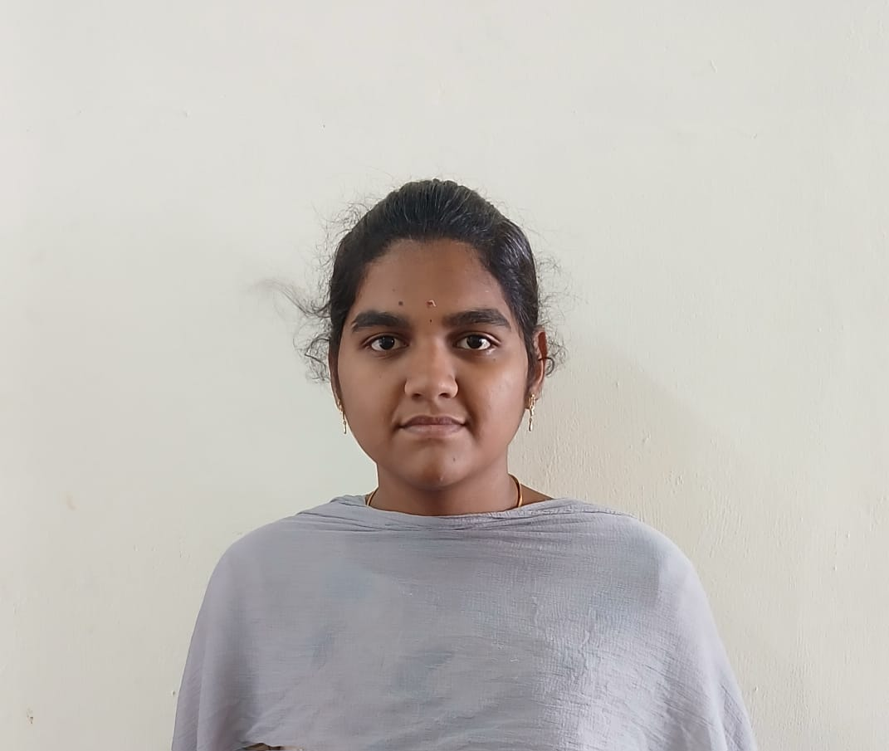

My Resume
Nandika K

OBJECTIVES
Motivated second-year engineering student seeking opportunities to apply theoretical knowledge, develop technical skills, and gain practical industry exposure while contributing effectively to organizational goals.
SKILLS
- C Programming
- Basic Python
- Java Programming
- Datastructures in C
- HTML
CERTIFICATIONS
- Won in paper presentation
- Won in Coding games
- TCSion carrier edge
- C programming course in C
Contact
Hobbies